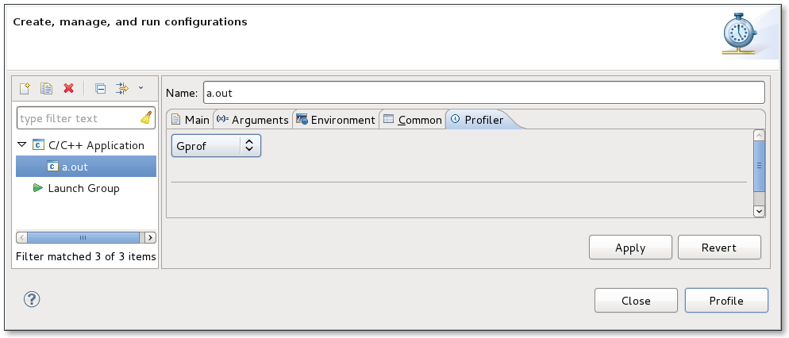

| Profiling Using GProf | ||
|---|---|---|
|
|
|
|
| Opening gmon.out | GProf View | |
Instead of running the application and double-clicking the gmon.out file, you can also just profile the application using the gprof plug-in. This will run the application and display the results for you. To profile using gprof, you can use Profiling Tools->Profile Timing and set the timing tool to be gprof.

In preferences, you can also go to: C/C++->Profiling->Categories->Timing and set the default timing tool to be gprof.

or for a project, you can override the workspace preference default using project Properties->C/C++ General->Profiling Categories->Timing

You can also profile your application using Profile as...->Local C/C++ Application whereby you have set the profiling tool in the Profiler tab to be gprof.

|
|

|
|
| Opening gmon.out | GProf View |